| # | تیم | بازی | برد | مساوی | باخت | گل -/+ | تفاضل | امتیاز | بازیهای اخیر |
|---|---|---|---|---|---|---|---|---|---|
| ۱ | تراکتور | ۳۰ | ۲۱ | ۵ | ۴ | ۵۷-۱۹ | ۳۸ | ۶۸ | W D W W W |
| ۲ |
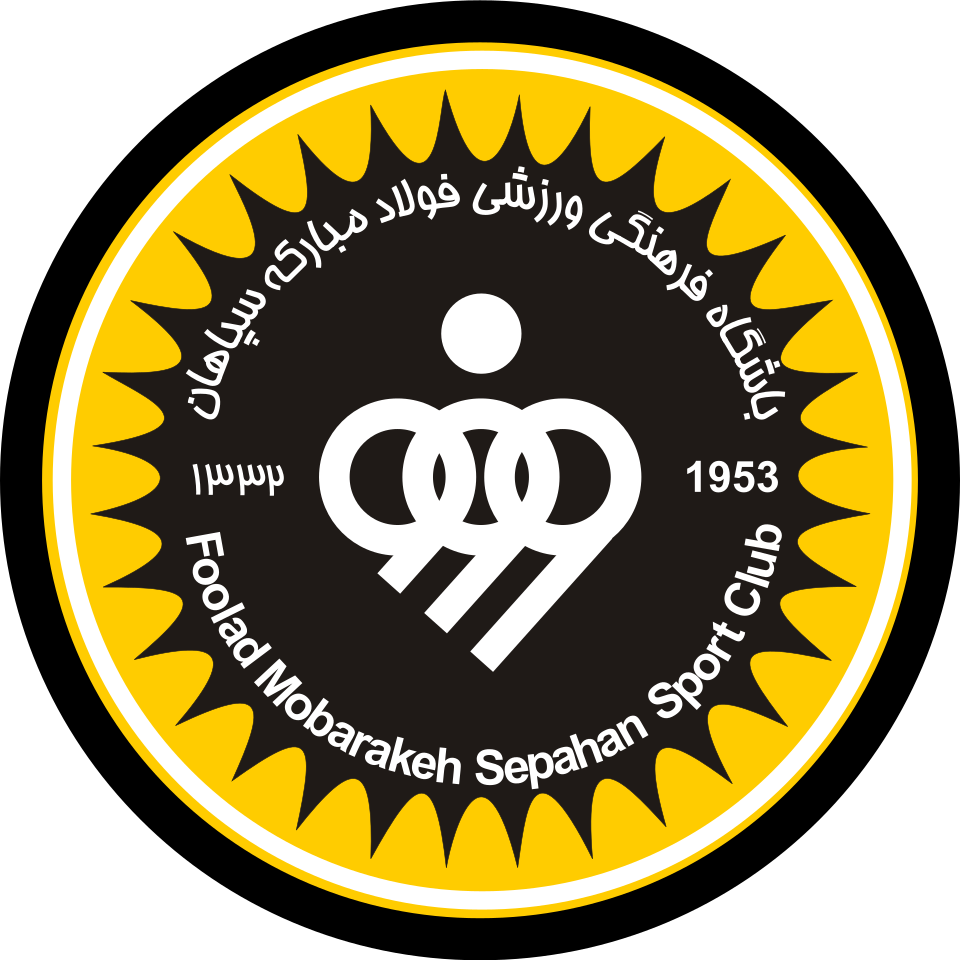 سپاهان |
۳۰ | ۱۶ | ۱۲ | ۲ | ۴۸-۲۱ | ۲۷ | ۶۰ | W D L W W |
| ۳ |
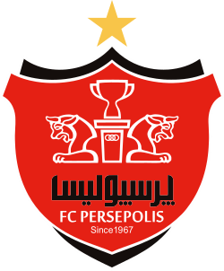 پرسپولیس |
۳۰ | ۱۸ | ۶ | ۶ | ۴۲-۲۰ | ۲۲ | ۶۰ | W W W L W |
| ۴ |
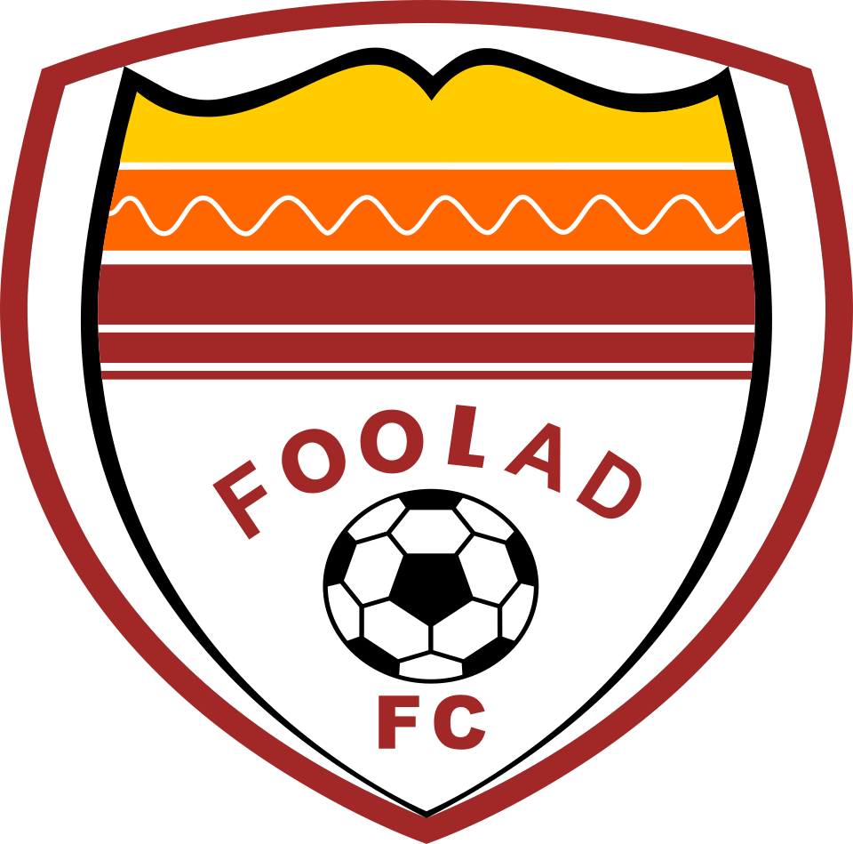 فولاد |
۳۰ | ۱۵ | ۸ | ۷ | ۳۶-۳۰ | ۶ | ۵۳ | D W D L W |
| ۵ | گل گهر سیرجان | ۳۰ | ۱۲ | ۱۱ | ۷ | ۲۳-۱۶ | ۷ | ۴۷ | W W W D D |
| ۶ |
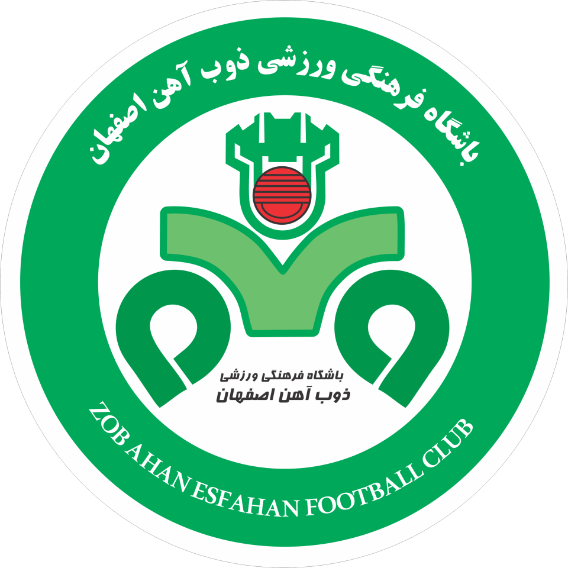 ذوبآهن |
۳۰ | ۱۰ | ۱۲ | ۸ | ۳۲-۲۸ | ۴ | ۴۲ | W W D W D |
| ۷ | ملوان | ۳۰ | ۱۰ | ۹ | ۱۱ | ۳۳-۳۳ | ۰ | ۳۹ | D D D L W |
| ۸ | آلومینیوم اراک | ۳۰ | ۷ | ۱۴ | ۹ | ۳۰-۳۱ | ۱- | ۳۴ | W D L D D |
| ۹ |
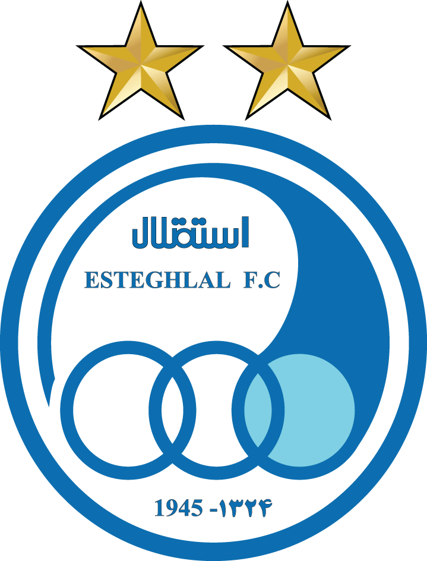 استقلال |
۳۰ | ۷ | ۱۳ | ۱۰ | ۳۰-۳۳ | ۳- | ۳۴ | L D W D D |
| ۱۰ |
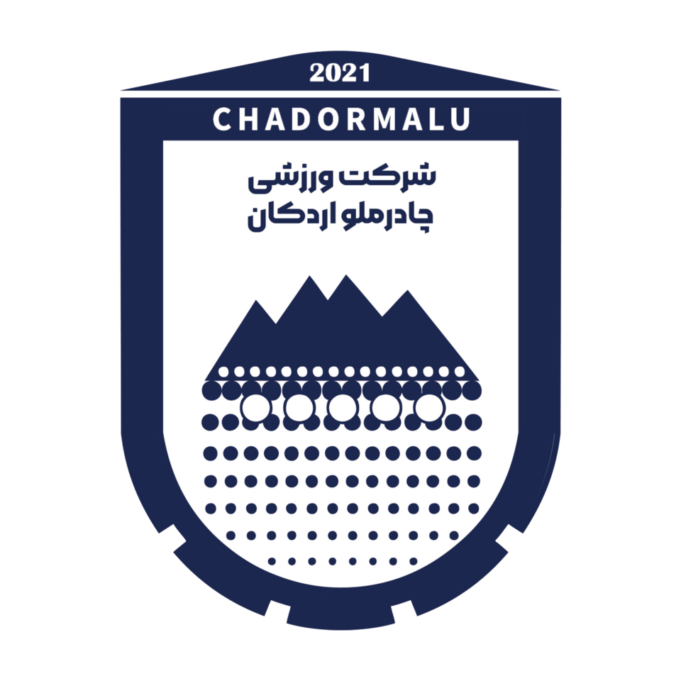 چادرملو اردکان |
۳۰ | ۸ | ۱۰ | ۱۲ | ۲۲-۲۸ | ۶- | ۳۴ | L D D D D |
| ۱۱ | خیبر خرمآباد | ۳۰ | ۸ | ۹ | ۱۳ | ۲۴-۳۱ | ۷- | ۳۳ | D L D W L |
| ۱۲ |
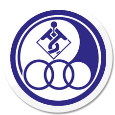 استقلال خوزستان |
۳۰ | ۶ | ۱۳ | ۱۱ | ۱۹-۳۰ | ۱۱- | ۳۱ | L L D L D |
| ۱۳ |
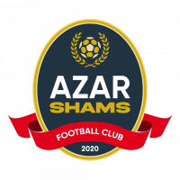 شمس آذر قزوین |
۳۰ | ۷ | ۸ | ۱۵ | ۲۳-۴۱ | ۱۸- | ۲۹ | L L L L D |
| ۱۴ |
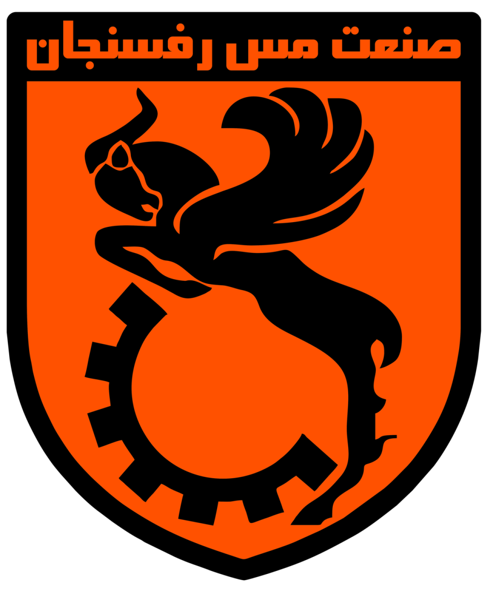 مس رفسنجان |
۳۰ | ۶ | ۱۳ | ۱۱ | ۲۴-۳۸ | ۱۴- | ۲۸ | D L L W D |
| ۱۵ |
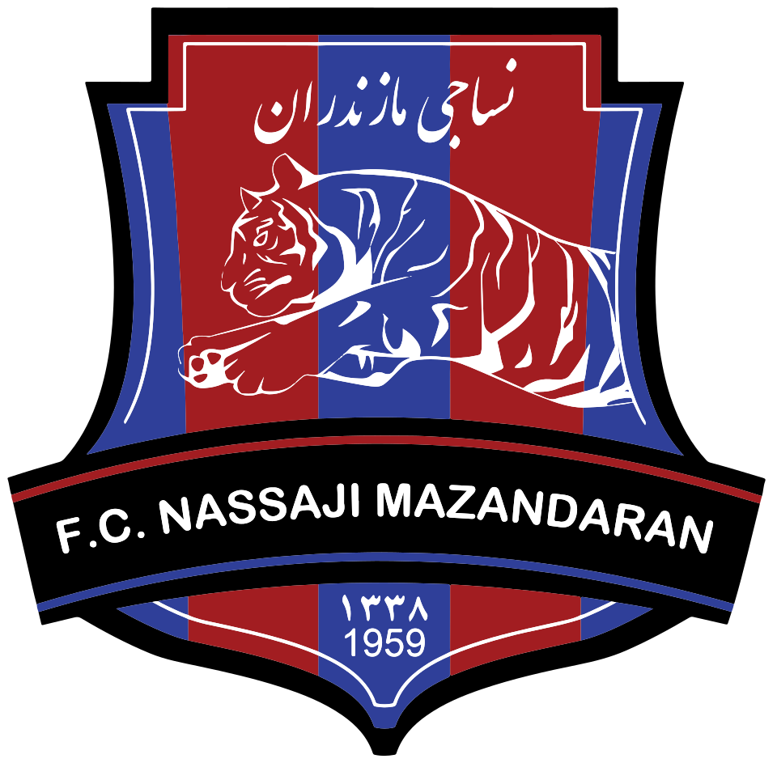 نساجی مازندران |
۳۰ | ۳ | ۱۴ | ۱۳ | ۱۵-۲۸ | ۱۳- | ۲۳ | L D D L L |
| ۱۶ |
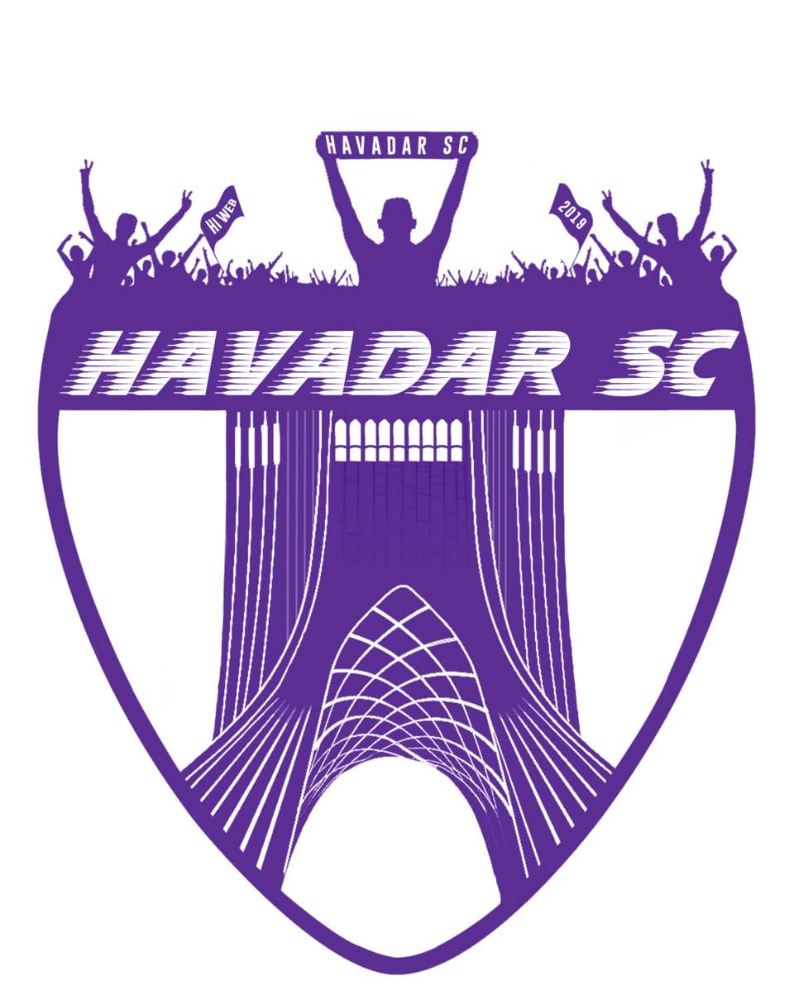 هوادار |
۳۰ | ۴ | ۱۰ | ۱۶ | ۱۷-۴۸ | ۳۱- | ۲۲ | L D D D L |